“Y ou can’t sleep,” says bishop Andrew Nkea, of the Mamfe diocese in south-west Cameroon . “Even with all the stamina I have from my faith, I couldn’t sleep when I went to Kembong and saw the houses that had been burned down … I saw a corpse which had been lying there for four, five days, and dogs were tearing it apart.”
A deadly conflict in Cameroon sparked by increasing tensions between English and French-speaking populations has driven tens of thousands from their homes. At least 160,000 people are displaced inside Cameroon, and more than 21,000 have fled to Nigeria to escape what has been described by bishops as “ blind, inhuman, monstrous violence ”. Most have settled in Cross River State.
 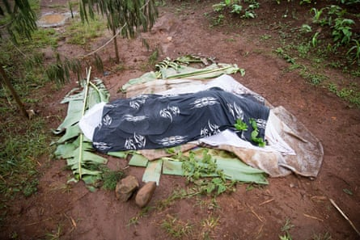
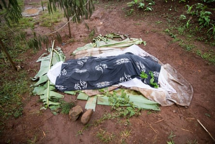Additional pictures by Peter Zongo in Cameroon
Some people are staying with family in Nigeria , but most are sleeping rough in abandoned buildings, or out in the open.
What began as a request for English to be used in the courtrooms and public schools of the country’s two anglophone regions has escalated into this crisis.
If the situation is not defused through dialogue, the entire country could be destabilised before October’s elections, according to the International Crisis Group .
A number of anglophone activists are calling for secession and the creation of a new country, which they want to call Ambazonia.
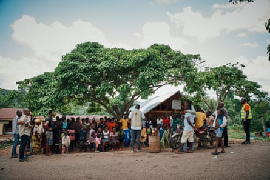Journalists have been barred from entering conflict zones and aid agencies are struggling to access the areas.
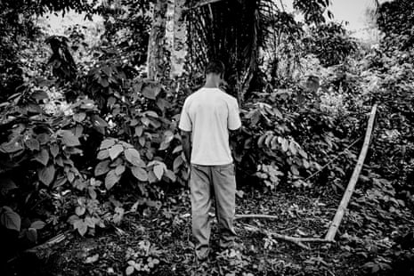Dennis Anyaka (not his real name), a 36-year-old businessman and farmer, arrived in Nigeria on 16 April. “The trouble started in my village in March. The Cameroonian military came and there was a lot of firing and killing. I saw one of my neighbours killed in front of his doorway. This was when I decided it was time to flee.” Anyaka took a heavy bag full of clothes and belongings. “But one of us was shot by the Cameroonian military and we dropped the bag and kept running,” he says.
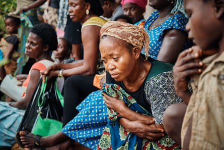“We passed from place to place until we finally arrived here [in Boki]. I am staying on a farm and am working the fields to pay my rent. I am sleeping on sacks on the ground. It’s not comfortable,” says Anyaka.
“Back home I lived with my wife and six children. I don’t know where my family is, I am trying to contact them but I haven’t succeeded. I’m still trying. I’ve heard they are maybe in the bush, maybe they have left to the city. I don’t know. For now, I propose that peace should be reinstalled so I can go back and find my family.”
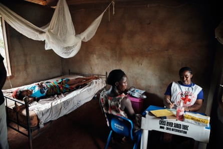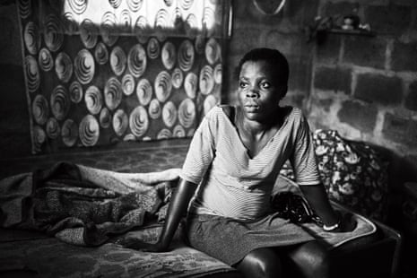Paulina, 19, left Cameroon after violence flared up last October. Her father is Nigerian, her mother is Cameroonian, and the family grew up in the village of Babong in Cameroon’s north. She and her family now live in her father’s house in Akankpa. Paulina’s father is Nigerian and the owner of the home.
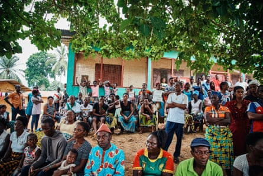The area is hosting hundreds of Cameroonians and access to clean drinking water has become a major concern. When violence erupted, Paulina said her family spent three days in the bush trying to find the the road that led to Nigeria. “We put whatever we could on the forest floor to sleep on, we only had some cassava to eat,” she says. “I don’t do anything all day since we arrived here. It’s not possible for me to earn a living. I want to go back to school.”
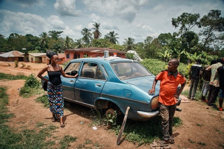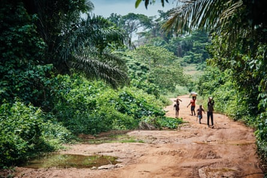
The Itomin family, displaced from the village of Ayaoke in Cameroon, stand on the porch of their host family’s house in Akankpa. Valentine Itomin, the owner of the home and a fatherof four, has welcomed 20 members of his extended family from Cameroon. “They have come to me so I have a responsibility to shelter and feed them. They don’t have as much food as they had in Cameroon. Our financial status has been reduced as a result of this financial pressure. I am a cassava farmer; it’s a subsistence living, so there is added pressure hosting so many people.”
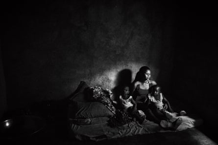Staying with Valentine is Beatrice Itomin and her four-year-old twin sons, Clinton and Clifford. They share a room with nine other family members. “We arrived here in November. People in my village were killed by soldiers, that’s why we fled.” The family walked for three days and slept in the open. “We ate bush mangoes. There were mosquitoes, there were wild animals also, so we were scared. The children are not feeling good here. We don’t have enough food or clothing, or school for them either.”
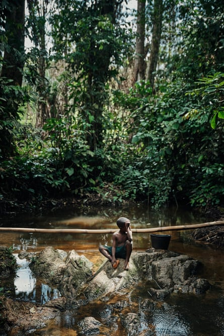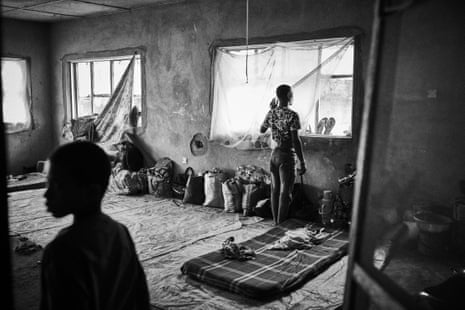Felix, 32, is one of 270 Cameroonians to have taken refuge inside a local government building in Ikom in Nigeria since fleeing. He shares a room with his wife, Beatrice, 28, their son, Promise, who is three weeks old, and their daughter, Lage, who is eight. The building opened to refugees in January. Many of the people sheltered there do not have relatives in Nigeria and many say they are hungry and there are not enough toilets.
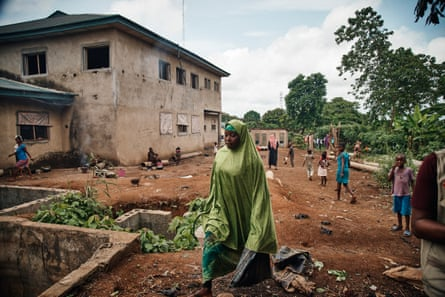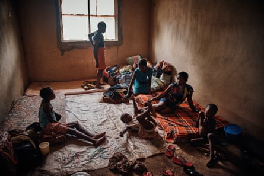“The army came into our village and started shooting. That’s why we ran,” says Felix. “We walked for three days. We were hungry. We don’t have any family in Nigeria, that’s why we are staying here. We don’t have enough food, it’s hard. We can’t go back now, the army are there with guns. We are frustrated we have nowhere to go. I’m a farmer, I grow cocoa beans. Our fields would be ruined by now without anyone there to tend to them. Our children are not in school, they’re wasted here.”
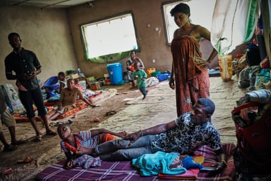His wife Beatrice says: “I am so sad. I made and sold clothes in my village. The army shut down my shop.”
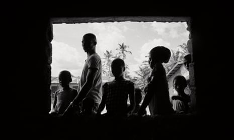“Not a week goes by without houses being burned down, people kidnapped or killed,” says Hippolyte Sando, emergency officer at Caritas, the only aid agency with access to the anglophone areas of south-west Cameroon. Caritas has recorded 25,624 Cameroonian refugees in Cross River State. Four-fifths are women and children.
“In these conditions, going back home would be suicide. The situation remains tense and gives no sign of better days ahead.”
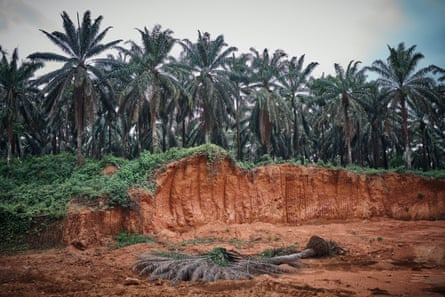Bishop Nkea has been negotiating with soldiers for civilians in his diocese to be able to return to their farms in peace.
“We should stop killing ourselves and burning down our institutions. Whoever is burning, they should stop the burning. It is time for dialogue. Because the violence is too much, the killings are too much, the suffering is too much.”
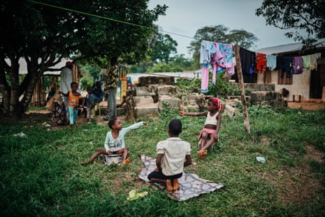